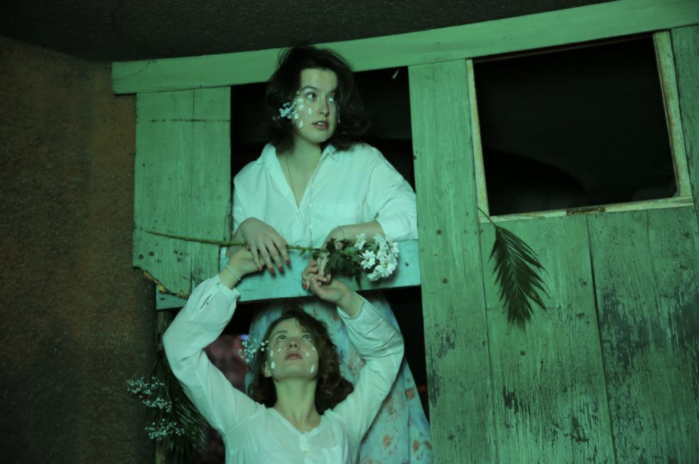
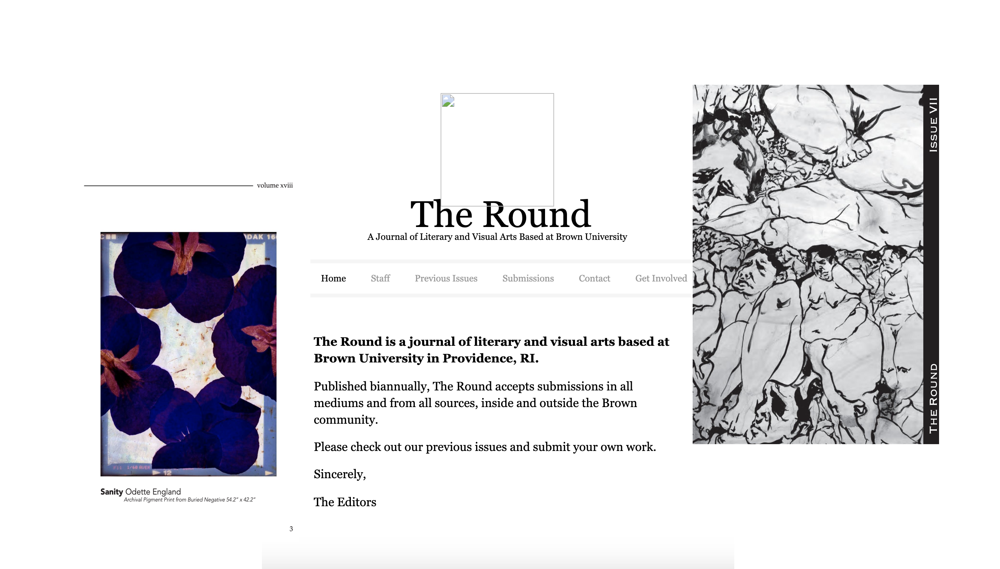
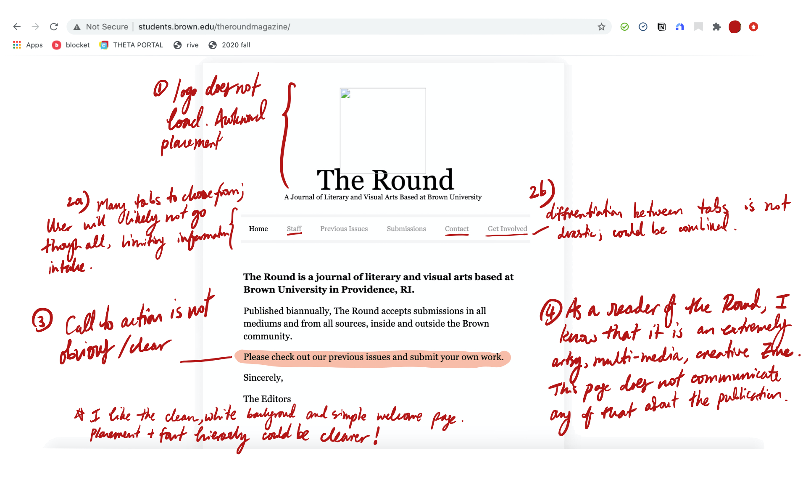
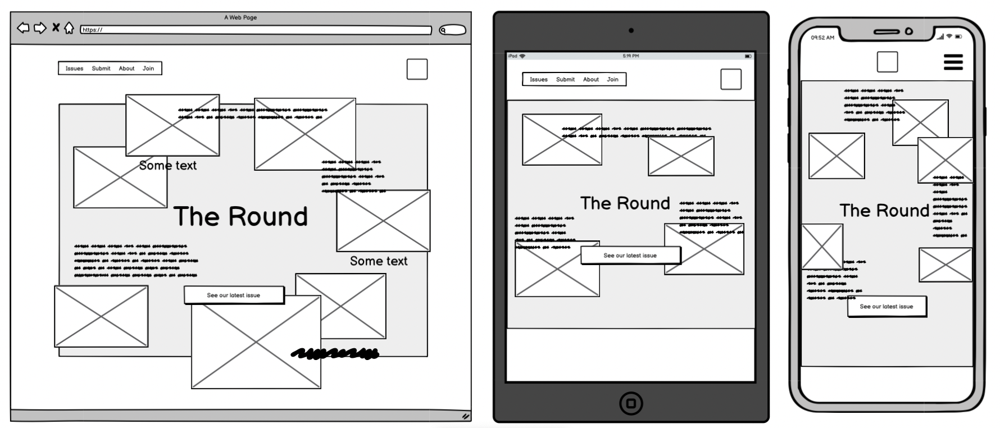
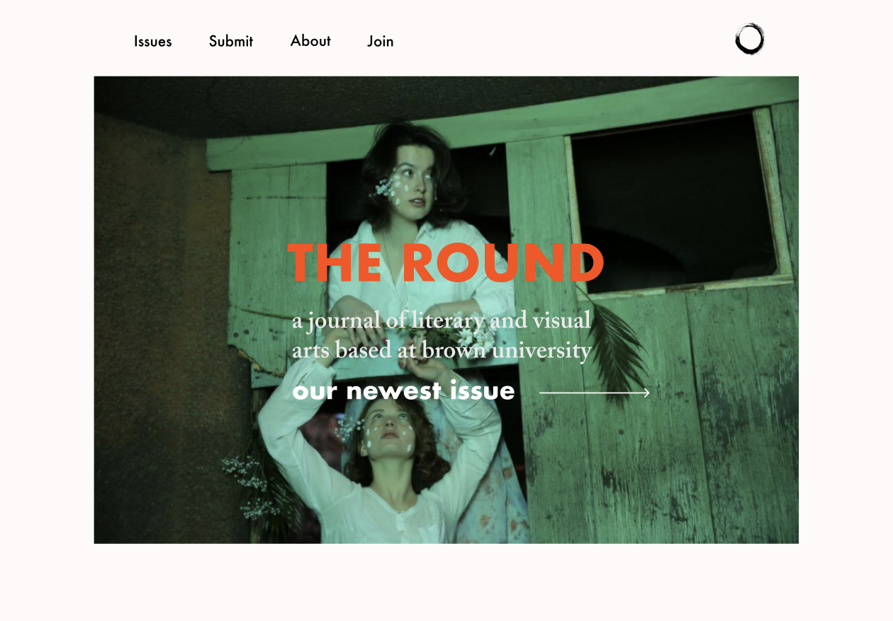
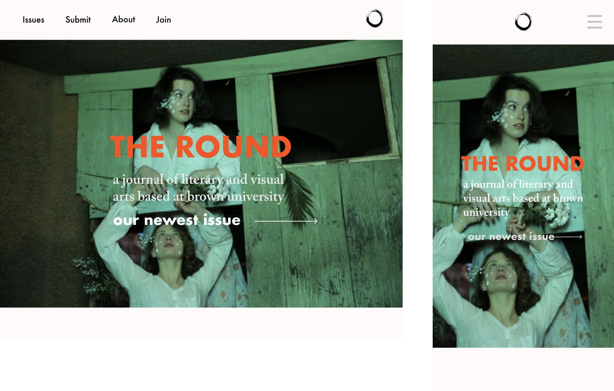
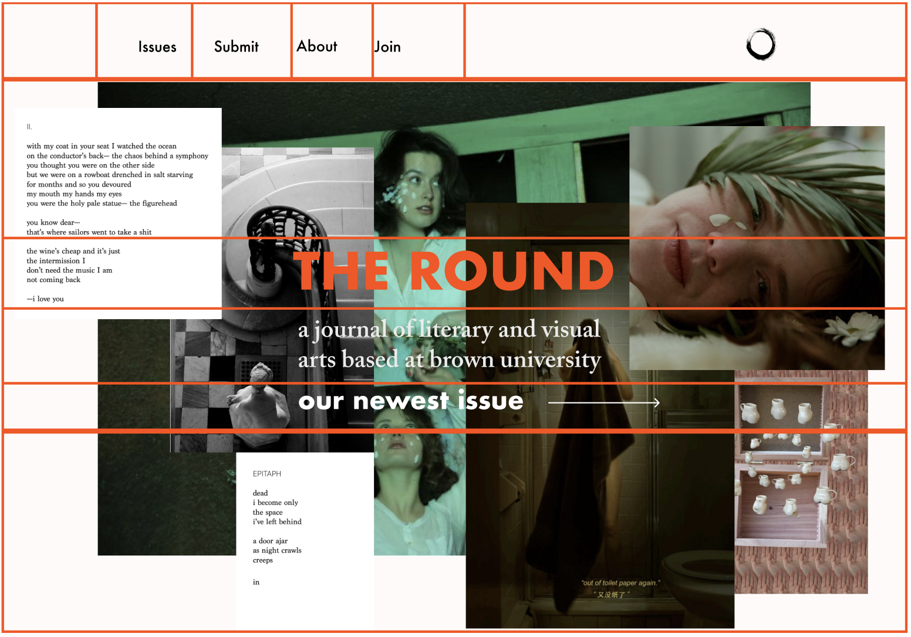

Redesigning The Round
The goal of this assignment is for students to practice the workflow of redesigning a simple website. Students should take away the skills necessary to analyze and identify flaws in an existing interface, create low-fidelity and high-fidelity prototypes for various screen sizes, and build a responsive website based on those prototypes.
10/20/20
All photos used in this assignment are credited to artists featured in The Round.
Part 1: Identifying Usability Problems
Choosing a website
The Round is a journal of literary and visual arts based at Brown University in Providence, RI. Published biannually, The Round accepts submissions in all mediums and from all sources, inside and outside the Brown community. I am a reader of The Round, and I was surprised by how under-developed their website was –– especially considering how hip and edgy the aesthetic of the published Zine is. As a result, I've set out to Responsively Redesign the website for The Round.
Finding Problems: usability, learnability, memorability
 Summarizing from the notes above, 5 main issues should be addressed in the redesign:
1) Logo does not load and has awkward placement.
2) Too many tabs to choose from with little diffrentiation between tabs. User has a tough time
choosing between tabs and will likely consume less information because they are unlikely to go through each tab diligently.
3) Call to action to 'check out newest issues' is not clear
4) As a reader of The Round, I know it
is an artsy, edgy multi-media and creative publication with a very diverse submission base. This page does not communicate any of that.
Accessibility
Size and contrast of text on the page passes accessibility standards (ratio is 8.59:1). However, there are some other design-best-practices that are not fulfilled: The logo does not load and it is missing alternate text. Without alternative text, the content of an image will not be available to screen reader users or when the image is unavailable. Language of the page is not identified: Identifying the language of the page or page elements allows screen readers to read the content in the appropriate language. It also facilitates automatic translation of content. Structurally, there is no heading, there are no page regions, redundant links exist, and there is redundant title text.
Part 2: Identifying Usability Problems
Low-fidelity Wireframing
Annotations
(to keep the content clear, I've decided to write up my annotations below in full text instead of within the wireframe file)
1) Logo: previously, the logo had been hyper-emphasized and centered. Putting it in the corner makes it more
elegant and less garish. It is currently situated on the top right.
2) Header tab: this design cuts down the number of tabs from 6 to 4 - namely 'Issues, Submit, About, Join'. The language is also clearer now and more succint
so users know exactly which tab will lead them to the information they are looking for.
3) There is now a clear call to action right below the description of The Round. It will read 'See our newest issue'.
4)Finally, the
new design attempts to communicate the 'vibe' of The Round: an artsy, edgy, Zine with a diversity of submissions. This is what inspired the myriad of artwork that seemingly 'floats' around the title. The front page will feature artwork,
poetry and snippets of writing from the Round to entice newcomers into checking out the new issues. I also chose to have a more sporadic layout versus a very organized box layout to communicate the creativity and spontaneity exuded
in many pieces by The Round.
High-Fidelity Prototyping: an evolution of designs
   Structure of page (drawn above in red lines): the page will contain 2 main sections: the header and the page body. Flexboxes will be used for this page because it is most dynamic and responsive to different sizes. The header will consist
of two adjacent flex containers, with the container on the left containing the 4 header tabs. The container on the right will contain the logo. The body will consist of one large column flex-direction container, which will subsequently
contain the title, description, and link to the issues page.
Font and image placement: to ensure that font and images don't move around weirdly when the window is scaled, all sizes will be in percentage formats. The texts
will also be in absolute positions, with z-index of 1 because it is in front. Imges will have z-index of 0.
Image generation: this will be the hardest part to engineer - to build a jquery function that randomly generates photos
on top of the initial page as time elapses. Two key functions will be required: a function that randomly generates images, and a function that randomly generates photo positions. The 'Window.interval' mthod can be called to periodically
call the functions.
Phone view: the tablet view will retain most of same structures as the computer view from above. The phone view however will rid the header tab section because it simply will not fit. Instead, a hamburger button will be used. The size of the text will also shrink accordingly.
Visual Design Style Guide


Size and contrast of text on the page passes accessibility standards (ratio is 8.59:1). However, there are some other design-best-practices that are not fulfilled: The logo does not load and it is missing alternate text. Without alternative text, the content of an image will not be available to screen reader users or when the image is unavailable. Language of the page is not identified: Identifying the language of the page or page elements allows screen readers to read the content in the appropriate language. It also facilitates automatic translation of content. Structurally, there is no heading, there are no page regions, redundant links exist, and there is redundant title text.
Part 3: Responsive Redesign
The website itself


Final Observations and Reflections
The actual execution of this page was somewhat limited by my technical ability. As a first-timer with web development, there were many aspects I had to do extensive exploration on before being able to implement, such as the randomly
generating the photos. I was unable to have the photos generate on top of the loaded page, but decided the brief lapse where the page only shows the artwork had a unique and cool effect.
Thinking more about accessbility
and usability however, I think there are parts of this design that could be improved upon. The 2 second lapse, while cool, could be inefficient for a user trying to rapidly navigate the site. While the lapse is not quick enough
to be problematic for people with epilepsy, it could also get annoying. Here, aesthetics of the website is heavily prioritized over navigation speed, which of course in part is due to my limited techincal abilities as the original
design as the images appear on the same page as the loaded links and tabs.
On the other hand however, this conscious choice could also be a valid one given this is the website for a Zine. Navigating through the website
is as much about the aesthetic experience as it is about someone trying to find the newest issue.